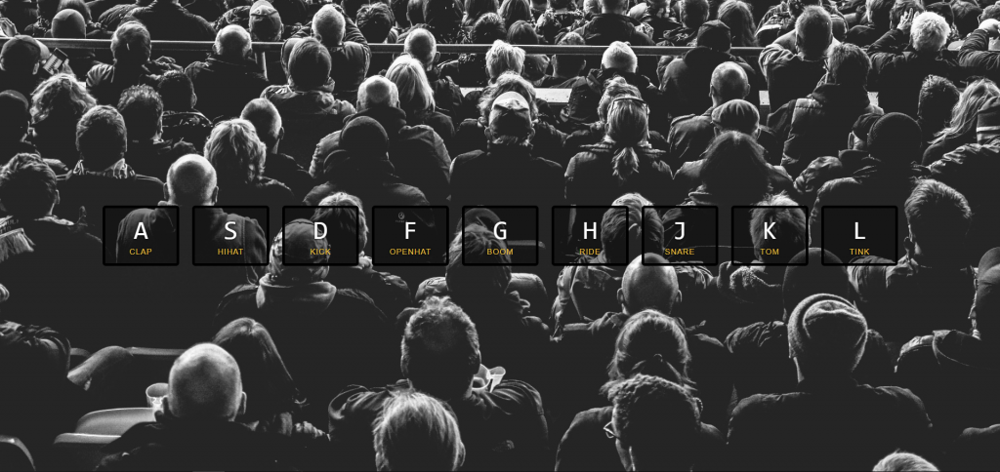
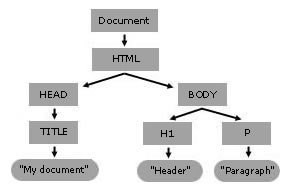
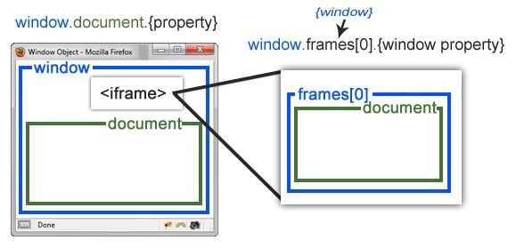
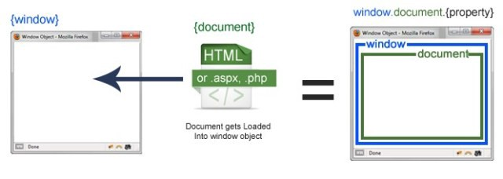
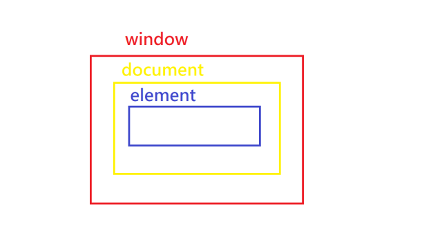

01 — Drum Kit

主題
透過JS使鍵盤及滑鼠按下後播放出對應按鍵的聲音，並同時產生一個特效，在按下其他鍵後會關閉該特效並於新按鍵中啟用。
步驟
Step1. 新增keydown listener
利用window.addEventListener('keydown', function);來監聽鍵盤動作。
(鍵盤每個按鍵都有固定的data-key這個參數)
Step2. 建立function
- 利用傳入的e.keyCode來取得對應的audio標籤及該按鍵的div標籤
- 判斷傳入的e.keyCode是否有對應的audio標籤，若無則退出
- 使對應的div加上playing樣式，產生對應的典及特效
- 使對應的audio播放時間為0
- 播放對應的音檔
Step3. 新增transitionend listener
當該元件觸發特效並結束時(transitionend)，呼叫function
Step4. 新增click listener
- 點擊後讀取data-key
- 利用傳入的e.keyCode來取得對應的audio標籤及該按鍵的div標籤
- 判斷傳入的e.keyCode是否有對應的audio標籤，若無則退出
- 使對應的div加上playing樣式，產生對應的典及特效
- 使對應的audio播放時間為0
- 播放對應的音檔
JavaScript語法&備註
EventTarget.addEventListener()：
EvenTarget常見有document、Element、window
Document 介面代表所有在瀏覽器中載入的網頁，也是作為網頁內容 DOM 樹（包含如 HTMLElement(“body”)、HTMLElement(“table”) 的進入點

window 物件代表了一個包含 DOM 文件的視窗，其中的 document 屬性指向了視窗中載入的 Document 物件



Element 介面表示了一個在 Document 中的物件，其描述了各類型元素的共同屬性與方法
element.classList：
add( String [, String] ); //新增多個classNameremove( String [,String] ); //移除多個className
如果已經存在/不存在的className則會被忽略。
還有其他方法如:
item ( Number )返回已存在的值toggle ( String [, force] )偵測是否存在這個className，存在則刪除/不存在則新增contains( String )偵測是否存在這個className, 返回true/false
HTMLmediaElement(audio)：
HTML的audio標籤，在HTML放置如下標籤指定音源<audio src="sound/a.mp3"></audio>
透過javascript來操作：element.play():進行播放element.currentTime:指定播放秒數
範例中使用currentTime是為了達到連發的效果
addEventListener
因為我是是第一次看到transtionend這個event，
所以去MDN查了HTML DOM event記錄連結在此
Array.from
範例中有這段const keys = Array.from(document.querySelectorAll('.key'));
查詢了Array.from才知道這是一個將一個物件或是字串轉為陣列格式的語法，
但當時覺得為何要把陣列在轉成陣列? querySelectorAll 不就是返回陣列嗎?
在查下去才發現 querySelectorAll 返回的是 nodeList 且 nodeList 跟 Array 是不同的!
雖然都很像陣列，但 nodeList 並沒有 array.prototype 上的方法！
最簡單的例子是用array.push()去測試，會發現由 querySelectAll 得到的物件無法用 .push()。
1 | let testNodeList = document.querySelectAll('.key'); |
箭頭函式(Arrow Function)
javascript-傳統寫法
let func1 = function(arg) { console.log('Hi, ' + arg); };
javascript-箭頭函式寫法
let func2 = arg => console.log('Hi, ' + arg);
補充: 如果該function沒有參數要傳，要帶空括號如下let func3 = () => console.log('Hi');
template literals
模板文字，同樣屬於第一次看到的東西，
利用` – 反引號(back-tick)或稱重音符(grave accent)來組合字串，
在範圍內可利用${}加上變數操作
例如原本的字串+變數組合寫法：
1 | let str = '<div data-key="' + key + '">' + |
用`包住字串，利用${}來包變數
這樣可以很輕鬆的組出易於閱讀的組合字串！
不用像以前還要注意單雙引號與+的配合了~
符號:
‘ 單引號 quote
” 雙引號 double quote
` 撇號 apostrophe
單引號以及雙引號的作用完全相同，單引號不可放在單引號內，雙引號不可放在雙引號內，單可以放在雙內，雙可以放在單內
[Difference between ` and ‘ in javascript](https://stackoverflow.com/questions/33679732/difference-if-there-is-any-between-and-in-javascript?lq=1)
JavaScript ES6 中的模版字符串（template literals）和標籤模版（tagged template
- Post title：【JS30】Drum Kit
- Post author：Neil Yang
- Create time：2019-05-11 00:00:00
- Post link：https://des86532.github.io/2019/05/11/JS30/JS30-javascript-drum-kit/
- Copyright Notice：All articles in this blog are licensed under BY-NC-SA unless stating additionally.